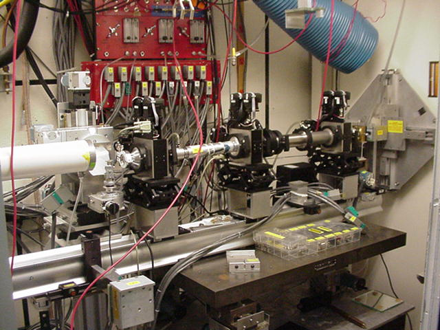
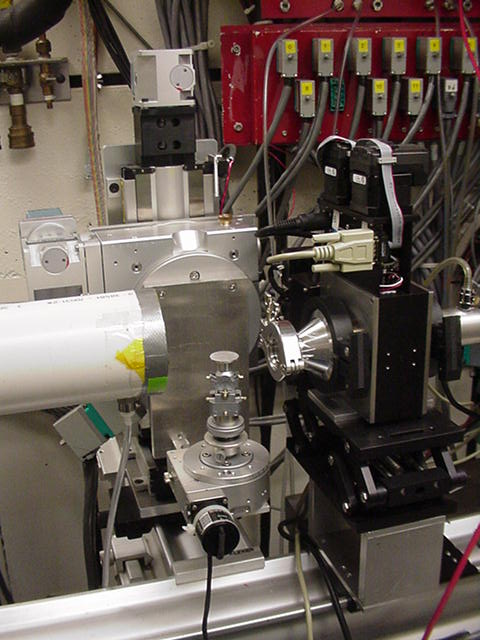
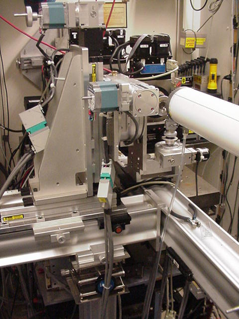
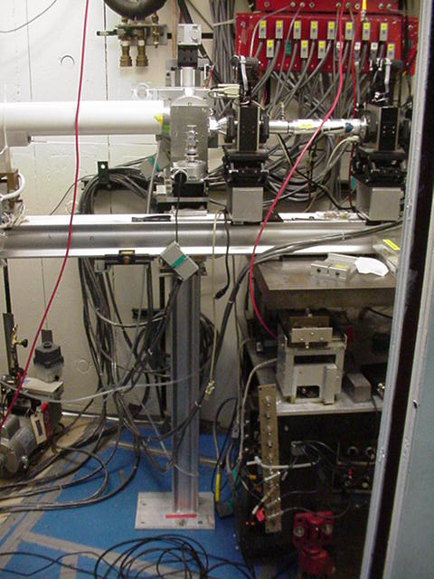
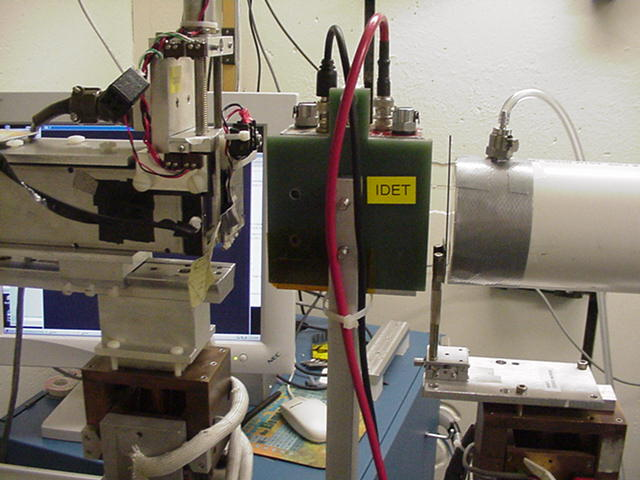
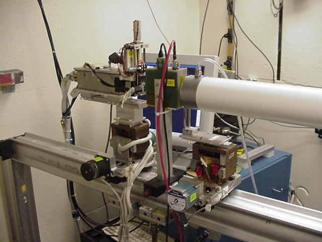

GISAXS @ D1

First incarnation of a GISAXS set-up in D1 hutch in August 2004. From
right to left: hutch
slits, Itot ion chamber,
manual incident
beam slit si, flight path
with shutter, monitor Imon,
and guard slit sg, sample
goniometer, and detector flight path.

GISAXS sample holder and goniometer.

G1 GISAXS sample stage visiting D-line (see also the Report by Smilgies
in CHESS Newsletter 2004).

One picture to remind myself: support of sample stage.

Beam stop, line-up ion chamber Idet,
and Medoptics CCD camera (in beam direction, i.e. from right to left).

Line-up ion chamber Idet and
Medoptics CCD detector with control computer in the back.
(Note: Although the GISAXS measurments are still done pretty much the
same way, almost all components of the first generation GISAXS set-up
have been replaced by now - DS, Aug. 2006)